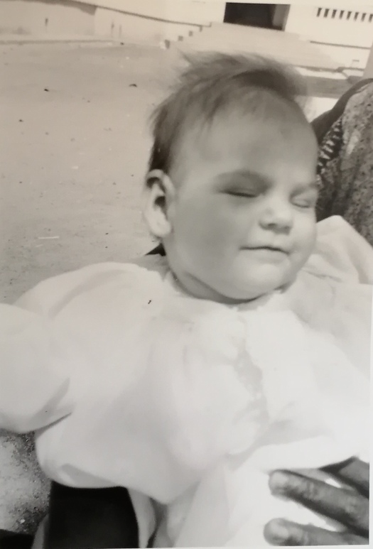
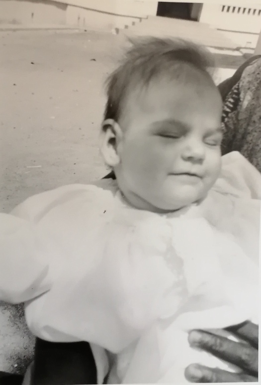

Jeune Adulte
Simone a étudié pour devenir aide-soignate à Giens dans le Var.


Adulte
Simone s'est mariée avec Yves Emmanuel Alain Fièvre en juillet 1966 et est partie vivre d'abord à Dakar.
Elle y aura ses 2 premiers enfants: Frédéric et Marie-Dominique.


 


Elle va vivre ensuite en Bretagne dans le Morbihan où elle a son dernier enfant: Isabelle.

Elle passera la plupart de sa vie d'adulte active ainsi que le début de sa retraite à Lorient.


Récompense
En 1997, à la fin de sa carrière d'aide-soignante, Simone reçoit une médaille d'honneur de la marine en récompense de ses services.

Voyages
Simone aime voyager. Elle montre le sud à ses enfants, les Alpes et l'Espagne.
Elle visite son amie de lycée Annie dans le var.
Elle part à la neige et visite l'Italie.


L'Artiste
Simone est une artiste. Elle aime peindre,tricoter, coudre et broder. Elle est très créative et travaille sur divers supports.
Sa fille Marie-Dominique est son modèle.